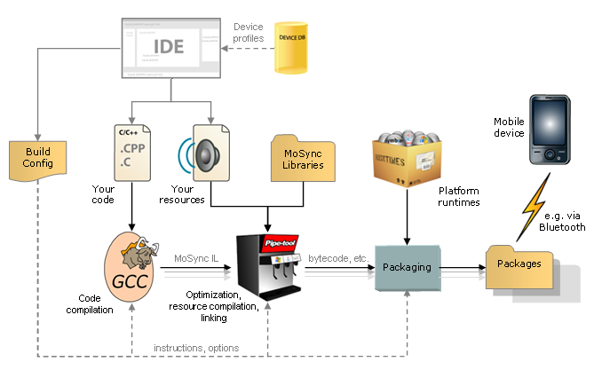
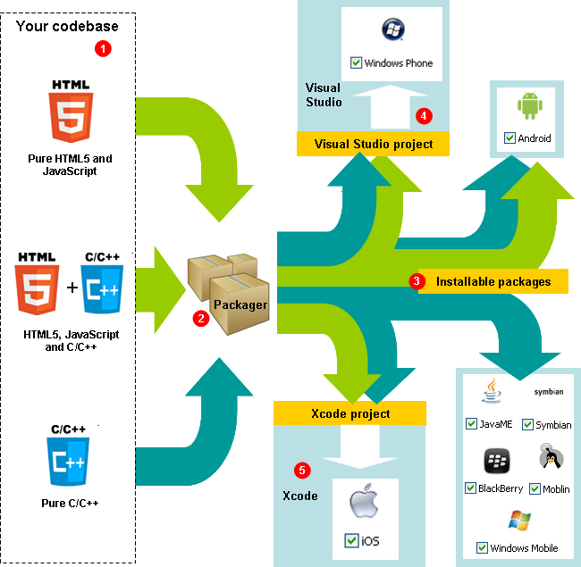

The MoSync IDE uses a custom GCC backend that outputs MoSync Intermediate Language. This is fed into Pipe-Tool, our transformation engine, which builds code trees, analyzes, optimizes and outputs bytecode or java ready for packaging with the appropriate runtime. The packager does the work of producing the installable packages for your platforms and devices.
When you finalize your application, the MoSync Eclipse IDE manages the entire build process for you, activating all the tools in the toolchain with the appropriate options and settings.
The IDE uses GCC to compile your code and Pipe-Tool to link it with the MoSync libraries and your resources. The IDE then combines the resulting bytecode or java source code with the appropriate platform runtime to create the executable packages for each target device.

If needed, control over the options and settings for compilation, linking, and packaging is available through the build configurations and settings for your project. It is also possible of course to run GCC and Pipe-Tool individually from the command line.
MoSync's implementation of GCC (the GNU Compiler Collection) compiles your program into an assembly-like format called MoSync Intermediate Language (MoSync IL).
The GCC backend defines a simple machine with a variable number of 32-bit registers and a flat memory model. Currently we are using GCC 3.4.6. For more information about GCC, see http://gcc.gnu.org/onlinedocs.
MoSync IL contains detailed metadata about your program, including symbol mappings and control flow information. MoSync IL is extremely rich, so much so in fact that you could pretty well convert it back to its source form if you wanted to.
Pipe-Tool is our transformation engine. It combines the functions of a resource compiler, linker, and code optimizer.
Pipe-Tool combines the MoSync IL output from GCC with the pre-compiled MoSync libraries into various target formats, including MoSync bytecode, Java bytecode, and C/C++ source code, ready for packaging. In the process, it also performs code verification, optimization, and dead code elimination to produce highly optimized outputs.
Pipe-Tool is also used by the MoSync Resource Compiler to package and index the external resources (images, audio files, binary files, etc.) that your application needs when it executes. For more information, see our Resource Compiler Reference.
The MoSync Packager is invoked whenever you build your project. The Packager may be called multiple times if you are Finalizing your application for distribution. Each run of the Packager produces either an installable package, or a project that needs to be finished in another tool, as shown below:

Your codebase can be pure HTML/JavaScript or pure C/C++, or a mixture of both, depending on your needs. The green arrows show how projects containing HTML/JavaScript can be packaged, the blue arrows show how pure C/C++ projects can be packaged.
The MoSync Packager is invoked by the MoSync IDE's Finalizer for each target platform (or target device in legacy mode). The output from the Packager is one of the following:
An installable package for Android (from any codebase) or an installable package for JavaME, Moblin, Symbian, Blackberry, or Windows Mobile (from a pure C/C++ codebase). All these packages can be sent directly to a device and installed in the normal way.
A Visual Studio project. This project needs to be built in Microsoft Visual Studio to create the installable package for a Windows Phone device.
An Apple Xcode project. This project needs to be built in Xcode to create the installable package for an iOS device.
(The Packager can actually create the full binaries for Windows Phone and iOS, but only if you have Visual Studio and Xcode installed, respectively.)